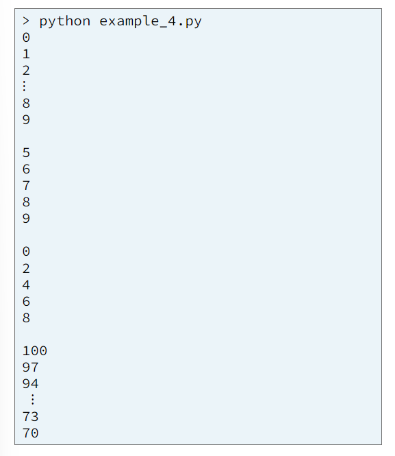

A Python program can store many values in a list. Lists are mutable, meaning they can be changed after they are created. Each value in a list is called an element and is stored at a unique index. An index is always an integer and determines where an element is stored in a list. The first index of a Python list is always zero (0). The following diagram shows a list that contains five strings. The diagram shows both the elements and the indexes of the list. Notice that each index is a unique integer, and that the first index is zero.
In a Python program, we can create a list by using square brackets ([ and ]). We can determine the number of items in a list by calling the built-in len function. We can retrieve an item from a list and replace an item in a list using square brackets ([ and ]) and an index. Example 1 contains a program that creates a list, prints the length of the list, retrieves and prints one item from the list, changes one item in the list, and then prints the entire list.
We can add an item to a list by using the insert and append methods. We can determine if an element is in a list by using the Python membership operator, which is the keyword in. We can find the index of an item within a list by using the index method. We can remove an item from a list by using the pop and remove methods. Example 2 shows how to create a list and add, find, and remove items from a list.
The lists in examples 1 and 2 store strings. Of course, it is possible to store numbers in a list, too. Python allows a program to store any data type in a list, including other lists.
A programmer can cause a computer to repeat a group of statements by writing for and while loops.
A for loop iterates over a sequence, such as a list. This means a for loop causes the computer to repeatedly execute the statements in the body of the for loop, once for each element in the sequence. In example 3, consider the list of colors at line 5 and the for loop at lines 8-9. Notice how the for loop causes the computer to repeat line 9 once for each element in the colors list. Of course, the code in the body of a loop can do much more with each element than simply print it.

Notice in example 3 at lines 8-9 that just like if statements in Python, the body of a loop starts and ends with indentation.
The Python built-in range function creates and returns a sequence of numbers. The range function accepts one, two, or three parameters as shown in example 4 and it's output. Many programmers use the range function in a for loop to cause the computer to repeat code once for each number in a range of numbers. Example 4 shows four for loops that iterate over a range of numbers.
In example 5 at lines 8-9 and lines 15-17, there are two for loops. Both loops print each element from a list named colors. The first loop iterates over the elements in the colors list. The second loop uses the built-in len and range functions to iterate over the indexes of the colors list. Which style of for loop do you prefer to read and write? Most programmers prefer to write a loop like the ones at lines 8-9 because it is simpler than the ones at lines 15-17.
In the previous example, the code in the body of both for loops is very short and simply prints one lement from the list each time through the loop. However, you can write as many lines of code as you need in the body of a loop to repeatedly perform all sorts of computations for each elements in a list.
A break statement causes a loop to end early. In example 6 at lines 8-12, there is a for loop that asks the user to input ten numbers one at a time. However, the loop will terminate early if the user enters a zero (0) because of the if statement and break statement and break statement at lines 10 and 11.
A while loop is more flexible than a for loop and repeats while some condition is true. Imagine that need a function to compare the contents of two lists? Can we use a loop to compare the contents of two lists? Example 7 contains a while loop at lines 35-46 with an if statement at line 42 that finds the first index where two lists differ.
A compound list is a list that contains other lists. Compound lists are used to store lots of related data, Example 8 shows how to create a compound list, retrieve one inner list from the compound list, and retrieve an individual number from the inner list.
Example 9 shows how to process all elements in a compound list. The for loop at line 24 causes the computer to repeat lines 24-34 once of each inner list that is inside the compound list named apple_tree_data. Line 28 retrieves the fruit amount from one inner list and then line 34 add one fruit amount to the total fruit amount.
In a Python program, the computer assigns values to ariables differently based on their data type. Consider the small program in example 10 and the output of that program. The program in example 10 contains two integer variables named x and y. The program in example does the following:
Why does line 7 (x += 1) change the value of x but not change the value of y? Because line 5 copies the value that was in x into y. In other words, x and y are two separate variables, each with its own value.
Example 11 shows a small Python program that contains two variables named lx and ly that each refer to a list. This program is similar to the previous program, but it has two lists instead of two integers. From the output of example 11, we see there is a big difference between the way a Python program assigns integers and the way it assigns lists. The program in example 11 does the following:
Why does it appear that appending the number 5 onto lx also appends the number 5 onto ly? Because lx and ly refer to the same list. There is really only one list with teo references to that list. Because lx and ly refer to the same list, a change to the lost through variable lx can be seen through variable ly.
From examples 10 and 11, we learn that when a computer executes a Python statement to assign the value of a boolean, integer, or float variable to another variable (y = x), the computer copies the value of one variable into the other. However, when a computer executes a Python statement to assign the value of a list variavel to another variable (ly = lx), the computer does not copy the value but instead copies the reference so that both variables refer to the same list in memory.
Why are booleans and numbers passed to a function by value and lists are passed to a function by reference? To understand the answer to this question, consider the work a computer would have to do if lists were passed by value.
When a computer passes a number (or boolean) variable to a function, the number is passed by value which means the computer copies the value of the number variable into the parameter of the ccalled function. This works well for numbers because each number variable occupies a small amount of the computer's memory. Making a copy of a number is fast, and the copy uses a small amount of memory.
However, a list may contain millions of elements and therefore occupy a large amount of the computer's memory. If lists were passed by value to a function, the computer would have to make a copy of a list each time it is passed to a function. If a list is large, copying the list takes a relatively long time and uses a lot of the computer's memory for the copy. Therefore, to make programs fast and use less memory, lists (and other large data types) are passed to a function by reference.
The fact that the computer copies the value of some data types (boolean, integer, float) and copies the reference for other data types (list and other large data types) has important implications for passing arguments into functions. Consider the Python program in example 12 with two functions named main and modify_args. The program in example 12 does the following:
From the output of example 12, we see that modifying an integer parameter changes the integer within the called function only. However, modifying a list parameter changes the list within ht ecalled function and within the calling function. Why? Because when a computer passed a boolean, integer, or float variable to a function, the computer copies the value of an argument into a parameter is known as pass by value. However, when a computer passes a list variable to a function, the computer copies the reference so that the original variable and the parameter both refer to the same list in memory. Copying the reference of an argument into a parameter os known as pass by reference.